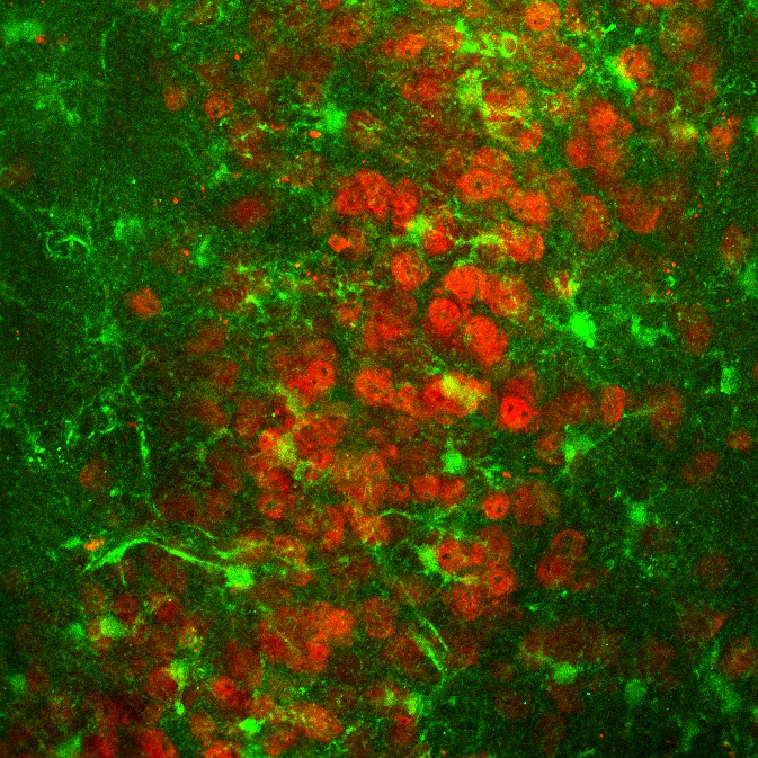

I attended the AACR meeting in San Diego for the first time last week. I usually go to SfN, NeurIPS and Biology conferences. This was different, and I am glad I went. I had a lot of conversations with scientists and others from industry and academia. As one would expect at a cancer conference, there were a remarkable number of studies using various tools, genomics, biomarker testing to essentially test the advancement and/or presence of disease and the type of disease. There were many booths, and studies that were even looking at differences in cell characteristics like the change in stiffness with cancer. With this focus on the cell, I noted that one cell characteristic that was missing was the shape of the cell, and the question whether it changed with cancer.
I was attuned to this question because I have been focused on this question in studying the shape of neurons and astrocytes in the brain. We have been studying them across species and also across different regions, and have come up with a way to mathematically characterize their shape, a sort of mathematical signature. This is handy because it lets us examine whether the cells change their shape between regions or species, and if they do, how these changes in the cell scale with size. This characterization could then allow us to link these changes to functional differences. This change, however, does not happen between regions alone. It also occurs within the same region with disease.

Astrocytes in green and neurons in red, show cells with different shapes in the piriform cortex in the brain. Image: Srinivasan Lab.
A friend of mine is doing research in addiction, and she found that these same cells change shape in mice that are addicted. For example the astrocytes are smaller and our algorithm can detect these changes. I was struck by how we could apply the same algorithms as another avenue for testing changes that might be occurring with cancer progression, and thus as a marker for cancer. One would think that neuroscience and cancer have little in common, but the underlying tools and techniques to study such systems, such as histology or genomics, are the same. Then, it makes sense that the analysis and algorithms used for making sense of the data might also have a lot in common. Maybe a cell shape tool might be the next tool in a cancer biologist's arsenal.